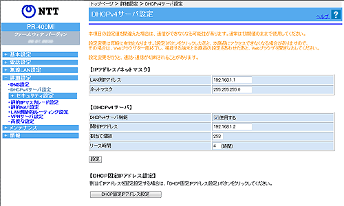

| DHCPv4サーバの設定をします。 |
| 通常は、初期値のままでお使いください。 間違えると接続できなくなりますので、ご注意ください。 |
| 設定変更は即時に有効となります。［設定］ボタンをクリックしたあと、本商品にアクセスできなくなる場合がありますので、その場合は、Webブラウザを一度終了し、接続する端末と本商品の設定をあわせたあと、Webブラウザを開きなおしてください。 |
| ※「Web設定」画面に表示されているボタンについての説明は こちら |
|  |
 LAN側IPアドレス
(初期値：192.168.1.1) LAN側IPアドレス
(初期値：192.168.1.1) |
|
| 本商品のIPアドレスを設定します。 通常は、'192.168.1.1'を設定しますが、適切なIPアドレスに変えることもできます。 |
|
| ネットマスク(初期値：255.255.255.0) |
|
| LANのネットマスクを設定します。 通常は、'255.255.255.0'を設定しますが、適切なネットマスクに変えることもできます。 |
|
＜お知らせ＞
|
| DHCPv4サーバ機能（初期値：使用する） |
|
| 「使用する」にチェックをつけると、 本商品のDHCPv4サーバ機能が有効になります。 通常は「使用する」にチェックして使用します。 LANに別のDHCPサーバがある場合や、DHCPｖ4を使用せずに運用する場合には、 チェックを外します。 |
|
| 開始IPアドレス(初期値：192.168.1.2) |
|
| (上記の「DHCPv4サーバ機能」で、「使用する」にチェックした場合) DHCPv4サーバがクライアントに割り当てる最初のIPアドレスを入力します。 |
|
| 割当て個数（初期値：253） |
|
| (上記の「DHCPv4サーバ機能」で、「使用する」にチェックした場合) DHCPv4サーバがクライアントに割り当てるIPアドレスの個数を指定します。 LAN側IPアドレス/マスク長で指定されたマスク長の値に応じて、最大253まで設定できます。 |
|
| リース時間（初期値：4） |
|
| (上記の「DHCPv4サーバ機能」で、「使用する」にチェックした場合) DHCPv4サーバが割り当てるIPアドレスの貸出時間を変更します。 1〜72時間の範囲で設定できます。 |
|
「エントリ編」の画面が表示されます。
DHCP固定IPアドレスエントリを編集します。
|
|||||||||||||||
| 1. | エントリ番号に登録する | ||||||||||||||
|
|||||||||||||||
| 2. | ［設定］をクリックする | ||||||||||||||